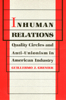

<body bgcolor="#FFFFFF" text="#000000" link="#0000FF" vlink="#CC0000" alink="#CC0000"><center><hr width="350" size="1" align="center" noshade>A vivid expos� of the use of Quality Circles at Johnson & Johnson's<hr width="350" size="1" align="center" noshade><p><a href="https://cdcshoppingcart.uchicago.edu/Cart/ChicagoBook.aspx?ISBN=9780877225027&&PRESS=temple" target="_top">Buy this book!</a> | <a href="https://cdcshoppingcart.uchicago.edu/Cart/Cart.aspx?PRESS=temple" target="_top">View Cart</a> | <a href="https://cdcshoppingcart.uchicago.edu/Cart/Cart.aspx?PRESS=temple" target="_top">Check Out</a></p><p></p></center><!--none//--><h1>Inhuman Relations</h1>
<H2>Quality Circles and Anti-Unionism in American Industry</H2>
<h3>Guillermo J. Grenier</h3>
<P>cloth 0-87722-502-8 $61.50, Jan 88, <FONT COLOR=#990033>Out of Stock Unavailable</FONT>
<br>paper 0-87722-632-6 $24.95, Mar 89, <FONT COLOR=#990033>Out of Stock Unavailable</FONT>
<br>Electronic Book 1-59213-097-6 $85.50 <FONT COLOR=#990033>Out of Stock Unavailable</FONT>
<BR> 256 pp
</P><BLOCKQUOTE><I>"[This] study of quality circles at Johnson and Johnson�s Ethicon subsidiary in Albuquerque, New Mexico, is unique because Grenier was able to lift the corporate veil. Taken on as an unpaid research assistant by the plant�s social psychologist, Grenier obtained permission to study how management used its participative program. He presents. a sobering analysis of how the superficially democratic quality of working life (Q.W.L.) groups facilitated managerial control. </I>Inhuman Relations<I> makes it clear that the tools social scientists have provided management are very powerful."</I>
<br>&#151<b>David Bensman</b>, <I>The Nation</I><I></I></BLOCKQUOTE>
<p>This vivid expos� of the use of Quality Circles by a major company to defeat a union organizing drive dramatically presents a negative view of the highly acclaimed new humanism in American management. Guillermo Grenier gives a unique insider�s account of Johnson & Johnson�s implementation of the workplace reform technique called Quality of Worklife or Quality Circles as a union-busting tactic. He describes this and other methods of controlling workers, which are veiled by the benevolent rhetoric of the new managers, and shows how the supposed "democratic reforms" often have autocratic underpinnings and results.
<p>For seven months in 1982-83, the author worked as a graduate researcher under the social psychologist in charge of Team development at a Johnson & Johnson division in Albuquerque. "Team" is the name used by the company for the quality circle technique of organizing workers into small groups that discuss problems on a regular basis. The Team approach, Grenier explains, "in fact increased the conflict not only between management and worker but between the workers themselves. With calculated precision, the workforce was divided and eventually conquered because management controlled their formal and informal interactions while at the workplace."
<p>Timely, controversial, and dramatic, <I>Inhuman Relations</I> presents the view that human relations management techniques have a strong anti-union tradition and have developed into liberal, acceptable methods of controlling the workforce.
<BR>&nbsp;<H2>About the Author(s)</H2>
<P><b>Guillermo J. Grenier</b> is Assistant Professor of Sociology and Director of the Center for Labor Research and Studies at Florida International University.</P>
<BR><H2>Subject Categories</H2>
<p><A HREF="/tempress/sociology.html" TARGET="_top">Sociology</a>
<BR><A HREF="/tempress/labor.html" TARGET="_top">Labor Studies and Work</a>
</p>
<BR><h2 class="inpageheading">In the series</H2>
<P><I><a href="http://www.temple.edu/tempress/labor_change.html" onMouseOver="window.status='Click for other books in this series!'; return true;" onMouseOut="window.status=''; return true;" target="_top">Labor and Social Change</a></i>, edited by Paula Rayman and Carmen Sirianni.
</p><p><i>Labor and Social Change</i>, edited by Paula Rayman and Carmen Sirianni, includes books on workplace issues like worker participation, quality of work life, shorter hours, technological change, and productivity, as well as union and community organizing and ethnographies of particular occupations.</p>
<p align="center"><a href="https://cdcshoppingcart.uchicago.edu/Cart/ChicagoBook.aspx?ISBN=9780877225027&&PRESS=temple" target="_top">Buy this book!</a> | <a href="https://cdcshoppingcart.uchicago.edu/Cart/Cart.aspx?PRESS=temple" target="_top">View Cart</a> | <a href="https://cdcshoppingcart.uchicago.edu/Cart/Cart.aspx?PRESS=temple" target="_top">Check Out</a></p><p><font face="Arial" size="1"><a href="copyright.html" onMouseOver="window.status='Web Copyright Policy';return true;" onMouseOut="window.status=''" title="Web Copyright Policy">&copy;</a> 2015 <a href="http://www.temple.edu" target="new" onMouseOver="window.status='Link to Temple University home page';return true;" onMouseOut="window.status=''" title="Link to Temple University home page">Temple University</a>. All Rights Reserved. http://www.temple.edu/tempress/titles/449_reg.html</font></p>